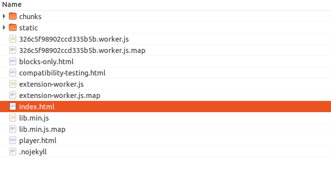
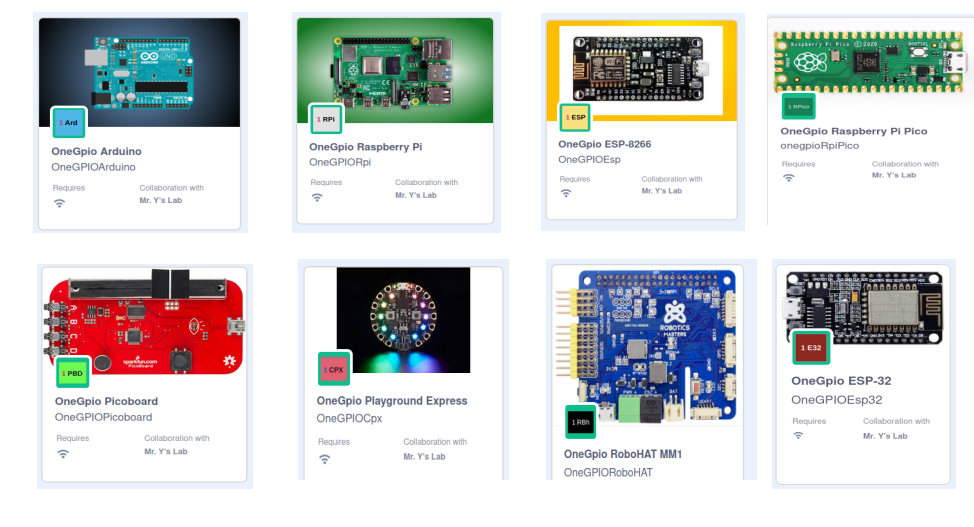

Launching Scratch 3 Offline
First, you need to download the files. Go to the s3onegpio GitHub Repository, gh-pages branch.
Click on the green Clone or download button at the upper right.

Save the file and then unzip it. This will create a directory called s3onegpio-gh-pages.
Using your file explorer tool, look for index.html in the s3onegpio-gh-pages directory and double click on index.html. The Scratch 3 OneGPIO editor should open.

To access the OneGPIO extensions, click on the Extension Icon at the lower left of the Scratch 3 Editor Window.

Scroll down and select the OneGPIO extension you wish to use. You may then choose additional OneGPIO extensions. Go to the "Using OneGPIO Extension Blocks" section for information on block usage.

Copyright (C) 2019-2020 Alan Yorinks All Rights Reserved